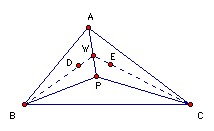

Let P be a point inside the triangle ABC such that ∠APB - ∠ACB = ∠APC - ∠ABC. Let D, E be the incenters of triangles APB, APC respectively. Show that AP, BD, CE meet at a point.
Solution
We need two general results: the angle bisector theorem; and the result about the feet of the perpendiculars from a general point inside a triangle. The second is not so well-known. Let P be a general point in the triangle ABC with X, Y, Z the feet of the perpendiculars to BC, CA, AB. Then PA = YZ/sin A and ∠APB - ∠C = ∠XZY. To prove the first part: AP = AY/sin APY = AY/sin AZY (since AYPZ is cyclic) = YZ/sin A (sine rule). To prove the second part: ∠XZY = ∠XZP + ∠YZP = ∠XBP + ∠YAP = 90o - ∠XPB + 90o - ∠YPA = 180o - (360o - ∠APB - ∠XPY) = -180o + ∠APB + (180o - ∠C) = ∠APB - ∠C.

So, returning to the problem, ∠APB - ∠C = ∠XZY and ∠APC - ∠B = ∠XYZ. Hence XYZ is isosceles: XY = XZ. Hence PC sin C = PB sin B. But AC sin C = AB sin B, so AB/PB = AC/PC. Let the angle bisector BD meet AP at W. Then, by the angle bisector theorem, AB/PB = AW/WP. Hence AW/WP = AC/PC, so, by the angle bisector theorem, CW is the bisector of angle ACP, as required.

© John Scholes
jscholes@kalva.demon.co.uk
22 Oct 1998
Last corrected/updated 21 Aug 03